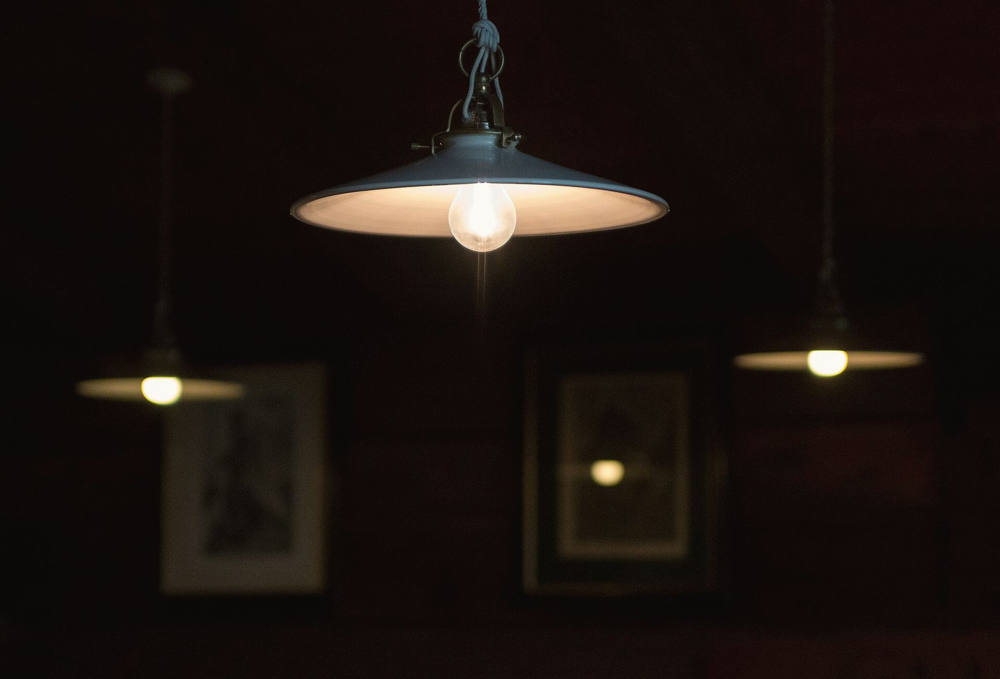
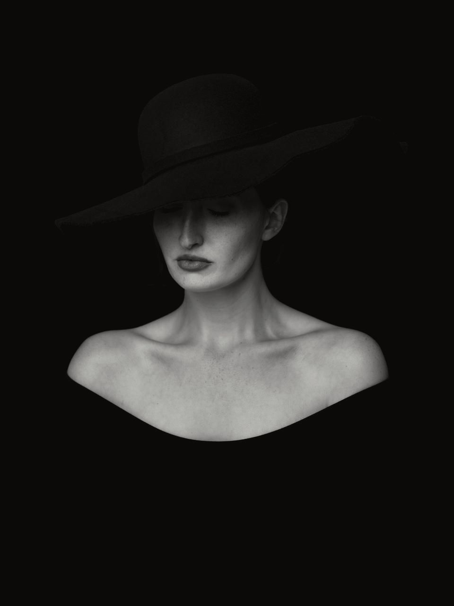

Muotokuvia, brändejä ja tiloja – valossa, joka jää mieleen.
Hämärä (subst.)
[ˈhæmæræ]
Vuorokauden hetki auringonlaskun jälkeen, kun valo on hajanaista, värit hiljenevät ja varjot pehmenevät.
Hämärä on hetki, jolloin valo pehmenee ja varjot alkavat puhua. Siihen hetkeen rakennan jokaisen kuvani – ihmisistä, esineistä ja tiloista, jotka ansaitsevat tulla nähdyiksi kunnolla.
- Muotokuvat
- Brändikuvaus
- Sisätilat
Valitut työt
Otteita viime vuosien kuvauksista. Avaa kuva suuremmaksi – selaa nuolinäppäimillä tai pyyhkäisemällä.
-
 – avaa suurempana
– avaa suurempana
01Katse -
 – avaa suurempana
– avaa suurempana
02Vanha keittiö -
 – avaa suurempana
– avaa suurempana
03Lehtikulho -
 – avaa suurempana
– avaa suurempana
04Tulppaanit -
 – avaa suurempana
– avaa suurempana
05Ruokasali -
 – avaa suurempana
– avaa suurempana
06Lukunurkka -
 – avaa suurempana
– avaa suurempana
07Askel -
 – avaa suurempana
– avaa suurempana
08Profiili -
 – avaa suurempana
– avaa suurempana
09Ranunkeli -
 – avaa suurempana
– avaa suurempana
10Sälekaihdin -
 – avaa suurempana
– avaa suurempana
11Kesäkeittiö -
 – avaa suurempana
– avaa suurempana
12Lierihattu



Kuvaan tilan sellaisena kuin se tuntuu – en vain sellaisena kuin se näyttää.
Hei, olen Noora.

Olen kuvannut ihmisiä, esineitä ja tiloja Helsingissä yli kymmenen vuotta – aina mieluummin varjojen kuin salamavalon kanssa.
Studio Hämärä toimii vanhassa kirjapainossa Sörnäisissä, mutta kuvaan yhtä mielelläni asiakkaan omissa tiloissa. Jokainen kuvaus alkaa keskustelusta: mitä kuvan pitää kertoa, ja kenelle.
En usko valmiisiin kaavoihin. Etsin kohteesta sen hiljaisen puolen, jota ei huomaa ensisilmäyksellä – ja annan valon hoitaa loput.
- vuodesta 2013
- yleensä 1
- 14 päivässä
Näin kuvaus etenee
-
i
Keskustelu
Mitä kuvan pitää kertoa, kenelle ja missä sitä käytetään? Kaikki alkaa siitä.
-
ii
Valon etsintä
Käyn paikan läpi etukäteen ja katson, mihin aikaan valo on siellä kauneimmillaan.
-
iii
Kuvaus
Rauhallinen tahti, ei kiirettä. Parhaat kuvat syntyvät usein tauoilla.
-
iv
Viimeistely
Käsittelen jokaisen kuvan itse ja toimitan ne yksityiseen verkkogalleriaan.
Kolme tapaa,
yksi valo
Jokainen kuvaus suunnitellaan erikseen. Hinta sisältää suunnittelun, kuvauksen ja viimeistellyt kuvat.
-
Muotokuvaus
Henkilö- ja yrityskuvat, näyttelijä- ja taiteilijakuvat. Rauhallinen kuvaus studiossa tai valitsemassasi paikassa.
- 1–2 tuntia kuvausaikaa
- 10 viimeisteltyä kuvaa
- Yksityinen verkkogalleria
290 €
-
Brändikuvaus
Tuotekuvat, kampanjat ja brändin oma kuvapankki. Rakennamme yhdessä kuvaston, joka kestää vuodenajasta toiseen.
- Kuvaussuunnitelma ja moodboard
- Puolen tai koko päivän kuvaus
- Käyttöoikeudet sovitusti
890 €
-
Sisätilat
Ravintolat, hotellit, sisustussuunnittelijat ja arkkitehdit. Kuvaan tilan tunnelman, en pelkkiä neliöitä.
- Kuvausaika valon mukaan
- 15–25 viimeisteltyä kuvaa
- Tarvittaessa stailaus
650 €
Asiakkaiden sanoin
”Noora sai paahtimomme näyttämään siltä, miltä se tuntuu aamuseitsemältä: hiljaiselta, lämpimältä ja vähän salaperäiseltä.”
”En ole koskaan viihtynyt kameran edessä. Nooran kanssa unohdin koko kameran – ja se näkyy kuvista.”
